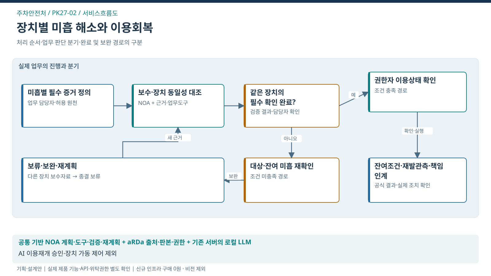

서비스흐름도 · 장치별 미흡 해소와 이용회복
이 도식의 목적 · 처리 순서·판단 분기·완료 및 재계획 경로

도식 원본 확대 · SVG · PPT 삽입용 PNG · 1600×900


핵심 해석
- 대표 사건: 장치–미흡–보수–공식 확인
- 처별 고유 로직: 미흡/보수/공식확인 상태 게이트
- 조건 분기: 같은 장치의 필수 확인 완료? → 충족 시 권한자 이용상태 확인 / 미충족 시 대상·잔여 미흡 재확인
- 공식 결과: 잔여조건·재발관측·책임 인계
- 책임 경계: AI 이용재개 승인·장치 가동 제어 제외
- 검증 상태: 실제 제품 기능·API·위탁권한·도입효과 미확정
화면 ID
PK-SCREEN-01· 검사 담당자·시설 관리자·보수업체 · 제안자료 · 실행 선택기 없음
- 자체점검에는 정상으로 입력됐으나 이전 검사 미흡의 보수증거가 빠진 가상 사건을 한 화면에서 이해하도록 설계했음.
- 실제 정보나 제품 실행결과를 표시한 화면이 아님.
기계식주차장 미흡 해소와 이용회복 검증
자체점검에는 정상으로 입력됐으나 이전 검사 미흡의 보수증거가 빠진 가상 사건
사건·근거
- facility_id / device_id / finding_id
- 설계·부품 판본 / 적용기준
- 보수 실행증거 / 필요한 재확인
- 공식 결과 / 실제 이용상태 / 후속관측
확인계획·업무 진행
- 원 미흡별 완료증거와 공식 확인 필요사항 정의
- 설계·부품·보수·점검 자료의 대상과 판본 대조
- 전문조치와 필요한 검사·공식 확인을 구분해 인계
- 실제 이용상태·재발 관측과 미해결 사항 연결
결과·남은 사항
- 해당 미흡의 조치증거·필요한 공식 확인·책임자 판단이 연결되고 잔여조건을 인계
- 일부 미흡 해소·부품 주문·정상 입력만으로 전체 안전확보나 이용재개를 확정하지 않음
- 최종 판단·원천 결과·조회시점 표시
사용자 흐름
- 허용된 사건과 대상·판본을 확인함.
- NOA가 필요한 확인질문·자료·선행조건을 구성하고 담당자가 중요한 전문쟁점을 검토함.
- 승인된 조회·분석의 반환 결과와 미확인 사유를 확인함.
- 새 보수자료가 다른 장치에 해당하면 종결을 보류하고 동일성·잔여 미흡 확인을 다시 계획함.
- 해당 미흡의 조치증거·필요한 공식 확인·책임자 판단이 연결되고 잔여조건을 인계함.
상태와 예외
| 상태 | 보여줄 내용 | 후속 처리 |
|---|---|---|
| 진행·로딩 | 실제 수행 중인 과업과 마지막 확인시점 | 완료로 오인하지 않도록 대기 사유 제공 |
| 자료 없음·부분 성공 | 결손 항목·조회 실패 원천·영향 범위 | 미확인 표시 후 보완/담당자 인계 |
| 권한 없음 | 허용된 사건명과 접근 거부 사유 | 자료 본문·요약·로그 노출 차단 |
| 시간초과·오프라인 | 실행 시도와 결과 미확인 분리 | 조회·대사 경로로 복구; 쓰기 자동 반복 금지 |
| 보완·판단 대기 | 일부 미흡 해소·부품 주문·정상 입력만으로 전체 안전확보나 이용재개를 확정하지 않음 | 원문·미결 과업·책임자·기한 유지 |
| 완료 | 해당 미흡의 조치증거·필요한 공식 확인·책임자 판단이 연결되고 잔여조건을 인계 | 정정·새 사실은 이력 보존 후 재검토 |
사용자·권한·표시 원칙
전문검토 의견과 국민에게 제공할 행동 안내는 권한별로 구분함.
실제 운영에서 등록·발송·공식 변경은 별도 권한·승인 경로를 적용함.
이 제안 화면은 읽기 전용이므로 승인·실행 버튼을 만들지 않았음.
화면 순서는 사건 → 근거 → 계획 → 결과이며 키보드 순서도 같음.
색상만으로 상태를 구분하지 않음.
작은 화면에서는 세 열을 세로로 배치하며 표는 개별 가로 스크롤을 제공함.
공식 원문은 기존 시스템에서 확인하고 개인정보 원값은 필요한 역할에만 표시함.
화면 수용기준
- 항목별 원문·판본·결손·공식 상태를 식별할 수 있고, 동일성 오류나 부분 완료가 전체 완료로 표시되지 않아야 함.
- 화면과 데이터 필드는 장치–미흡–보수–공식 확인 단위로 함께 검수함.
- 접근성 목표는 WCAG 2.2 AA이며 인증·전수 실사용 평가는 미수행임.